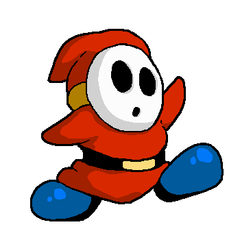
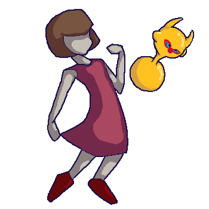
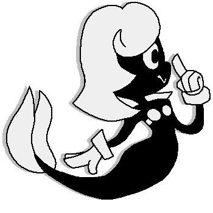
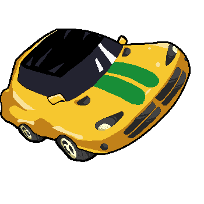
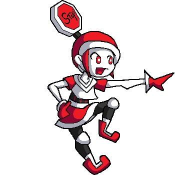
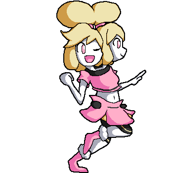

Take a look at my mods for Rivals of Aether!
Click here to see all my content in Steam!Shy Guy
My first delve into the world of Rivals of Aether modding - Shy Guy, based heavily on his appearances in Super Mario Bros. 2 and Yoshi's Island, is a tricky fighter with a lot of bizarre and unique tools up his pint-sized sleeves! I used him as something of a blank canvas to test out any idea I could fathom, and learned a lot about fighter design from it!
Lovely Sweet Dream
My second completed fighter, based on the mesmerizing world of Osamu Sato's LSD: Dream Emulator! Lovely Sweet Dream is a representation of the whole of that game, from the various character and action references, to the bizarre Dream Graph mechanic! Possibly the most out-there platform fighter character you'll see - so far anyways!
Ms. Maribel
My first original character fighter, based on a design I made in 2019, Ms. Maribel brings a whole new spin on the LCD style! Making a fighter with limited animation, while easier to make better single frames, was an interesting challenge! Replicating that animation style to the best of my ability and still having it be readible in a fighting context was quite the fulfilling task!
Venom SST
Drifting in from the classic arcade racing game series Cruis'n, Venom SST has made for a surprisingly fun fighter! Utilizing tricks originating from Cruis'n World, as well as the Blast! mechanic from Cruis'n Blast!, this fighter is as reckless as it is fast! Making a character such a limitation in poses was a unique challenge!
With more original fighters on the way!
 Some stage previews as well!